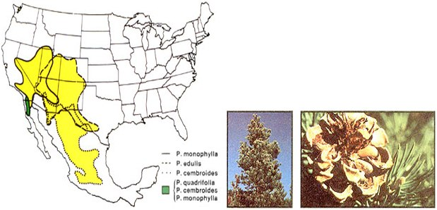
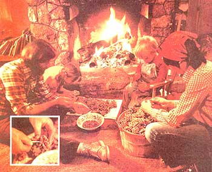

All pine trees bear edible nuts, but only four varieties of the piñon produce nuts large enough to be "worth the harvesting". These piñon trees thrive in mountain deserts and on mesas at elevations of 3,500 to 9,000 feet as far north as Idaho and south Nevada foothills on the west and ranging as far east as the eastern slopes of the rocky Moutains. Florence Blanchard, who wrote this article, recommends that you read Donald Culross Peatie's A Natural History of Western Trees if you want further information about piñons.
Take a lazy fall afternoon in the great U.S. Southwest, add the delightful aroma of a thick pine mountain forest, top with a generous helping of the stickiest sap imaginable . . . and what have you got? Piñon nutting, that's what!
I doubt if anyone really knows just when the earliest human inhabitants settled in the U.S. Southwest. But it's a cinch that those Native Americans would have found it a great deal more difficult to live in this region if the piñon pines hadn't gotten here first.
Piñon burns hotter than any of its numerous evergreen relatives and, as a fireplace fuel, it has no comparison. (Just catch one whiff of the lincense-like aroma emanating from a smoldering log and you'll be a piñon convert forever!) The famous hogans (pit houses) of the Southwest were constructed with timbers from this high-desert tree and the Native Americans caulked their baskets and water bottles with its gummy pitch. At least one Indian tribe still dyes wool black with a coloring made from the same resin.
And then there's the delicious piñon nut, which actually was the major source of winter protein for generations of the Utes and Paiutes of the Great Basin region of the Southwest. The nut was such an important staple in the diet of these peoples, in fact, that a bad piñon year could mean near-starvation for them.
Some tribes of western Indians still depend heavily on the piñon for their livelihood-the nuts sell for anywhere from $3.50 (unshelled) to $6.50 (shelled) a pound in California health food stores and gourmet shops-and maintain control of their traditional harvest grounds.
In other areas, however, the U.S. Forest Service will issue a commercial nutting license to almost any individual who wants to try his or her hand at gathering the piñon's bounty from national forests for sale to the specialty commercial market. The USFS is also generally happy to issue permits and directions to a likely nutting area to individuals and families who merely want to harvest piñons for their own use. (The service widely endorses pine nutting, since only a very small number of the unharvested seeds ever germinate. Gathering and eating as many piñon nuts as possible each year, in short, in no way damages the pine forests that produce them.)
The four varieties of piñon you're after (see map accompanying this article) vary somewhat in appearance, but they're all relatively short trees-20 to 30 feet in height-with gnarled, weathered branches. Their cones which are small, egg-shaped, and clustered in a flat crown at the top of each tree-take two full seasons to ripen . . . which means that any single piñon bears nuts only every other year.
The nuts themselves are bean-shaped, one-half to three-quarters of an inch long, and covered by a thin, smooth shell. The ivory-colored meat inside contains 13% protein, 60% fat, and 20% carbohydrates . . . a near-ideal balance for the Native Americans who lived without central heat and needed to consume a lot of calories to maintain body warmth. Most folks who've tried piñons describe the nuts as tasting like "chewy, piney peanuts" . . . and most of the experimenters come back for more!
Experience has taught us that it's a good idea to get out and look over our favorite groves of piñon trees no later than early August . . . just to keep an eye on how the cones are coming along. At first, of course, they're still tightly sealed, sappy little globes of nothing. But, as the weeks pass into winter, the cones mature, slowly open, and-finally-dispense their hoard of nuts over the ground (much to the delight of birds, field mice, deer, squirrels, and even other humans). If you want your fair share, you should try to harvest the nuts about halfway between the time they're tightly clenched and fully opened . . . say late August or sometime in September.
We make piñon harvests a family affair and our equipment consists of: [1] a picnic lunch, [2] our oldest -and I do mean oldest-clothes, including head scarves, [3] three or four old sheets, a large tarp, or a piece of polyurethane measuring approximately 6 feet by 30 feet, [4] burlap sacks, plastic garbage bags, or cardboard boxes, [5] plenty of cleanup rags, and [6] waterless hand soap or cooking oil.
Why the old clothes, rags, soap, and oil? Because of the delightful smelling but resinous, sticky sap which runs so freely from piñon trees. We arrived home from our first pine nutting expedition looking as though we'd been tarred and then feathered with evergreen needles! It took days to remove the goo from our hair and bodies.
But we're smarter now. Although we still don't like to wear gloves when out nutting as some people recommend, we do "cover up" with full-length jeans, long-sleeved shirts, and hats or hair scarves. And we coat our hands, exposed portions of our arms, and sometimes even parts of our faces with waterless hand cleaner (available from the local hardware store) or ordinary cooking oil before we confront the trees. The sap then scrubs off easily with a rag and some water once we've finished picking.
Despite all these precautions, though, someone still invariably ends up with pitch in his beard or her hair. If this happens to you (and I guarantee it will), use a clean rag to apply a small amount of paint thinner to the spot. Then, since the solvent is both caustic and highly flammable, wash the thinner and dissolved sap away quickly with warm, soapy water.
As I've noted earlier, piñon nuts are clustered at the top of each tree . . . which means that you-or someone in your party-will have to get up there "amongst 'em" and knock them down if you expect to go home laden with anything resembling a bountiful harvest.
Not just anyone is ideally suited for this job, however. Remember that the Southwest is arid and that piñons are scrappy little trees. (It's not uncommon for one of these pines to be a century or more old . . . and still have a main trunk no more than six inches in diameter!) The branches of the piñon are thin and wobbly and the best candidate for shaking down pine nuts is a child between the ages of eight and twelve. Our nine- and eleven-year-old daughters vie for the honor ("Look Ma, no hands!") and their three-year-old brother can't wait until he's big enough to take over the task.
A sturdy stick about six feet long and padded on one end with a rag or piece of foam rubber (to protect the tree) is a big help to whoever draws the job of knocking down the nuts. If you're "it", just climb half or two-thirds of the way up a tree, reach up and out with the padded end of the pole, and carefully whack away at the cones. The folks down below will be greeted by a shower of mottled, coffee-brown nuts and quite a few whole cones.
If you've done a good job of spreading your sheets or tarp around the base of the piñon tree beforehand, most of the nuts will fall on the material. It's then a simple matter to fold the ends and sides of the fabric together and dump the harvest into your bags or boxes. Next tree! (We don't feel well provisioned for the winter unless we've squirreled away piñons from at least a half dozen trees . . . but we don't try to gather them all in one day!)
If, for some reason, you can't-or don't want to-wait until your piñons cones are half opened before knocking them down, you can whack away at the cones while they're still tightly closed and sappy. Stash the gooey globes in burlap ( not plastic, which will retain moisture and prevent the cones from drying out) bags and hang them from a tree at home. The first good fall freeze that comes along will then force the cones to ripen and expand enough to allow you to pick out the seeds within. Or, just as the Indians sometimes did, you can bury the closed cones in the ashes of a hot fire and let the heat force them open. Either of these methods of releasing the nuts is exceedingly messy compared to harvesting the piñons after they've been allowed to ripen on the tree.
Although we could pick out and clean our foraged nuts immediately, we usually stash them in burlap bags in the house or toolshed-safely out of reach of squirrels and mice!-for a few weeks while we put our garden to bed for the year and gather in a winter's supply of (piñon) wood.
Then, as the mood strikes us, we dump our "crop" out on a small tarp and separate the nuts from the cones, pine needles, and other "trash". The seeds are then poured into a large pail of water and all that float (which are either empty shells or shriveled, inedible nuts) are skimmed off and discarded.
The good nuts are then dried and stored in paper bags or coffee cans with pop-off lids . . . where they keep well for as long as a year.
Some of the old-timers we've talked to say that any piñons stored for more than a few weeks should be "freshened" by blanching them in steam or hot water for several minutes before they're roasted or eaten raw. We've tried the idea and we think it's a good one.
Piñons go well with nearly any winter soup, stew, or vegetable. And I've never heard anyone complain about the idea of munching through a pocketful of the nuts while engaged in splitting a stack of stovewood or doing other nippy-weather outdoor chores. Folks in our house also like the idea of keeping a big bowl of piñons near the hearth for lazy, around-the-fireplace, late evening snacks.
One word of caution, though: Shelling out large quantities of this tiny nut requires all the resources of a quilting bee. So gather the family or a few friends together, make an event of the task, and then try one of the tasty local recipes that accompany this article. Believe me, as sticky as piñons sap may be and as tedious as piñon nuts are to hull out . . . it's worth all the trouble!
1/2 cup of finely chopped celery
1/4 cup chopped green onion
5 tablespoons of butter
1 cup of pearl barley
1/2 cup fresh parsley
2 cups chicken or beef broth
1/2 cup of raw or roasted piñon nuts
Saute celery and onions in butter in a medium saucepan until the vegetables are just wilted. Then add the cup of barley and brown the mixture lightly. At that point, stir in the parsley and transfer the contents of the pan to a buttered casserole dish. Pour one cup of broth over the casserole, cover the dish, and bake for 25 minutes in a 350°F oven. Then add the second cup of broth, sprinkle the piñon nuts over the casserole, and continue baking the dish-uncovered-until the liquid is absorbed and the barley is done.
Or you can put all the above ingredients into a crock pot or skillet at once, cover, and cook over a slow heat for 30-45 minutes or until the barley is tender. Either way, this is a superb dish!
1 small bag of kidney beans
1-1/2 pounds of hamburger
1 chopped onion
1 diced clove of garlic
1 No. 2 can of whole tomatoes or tomato puree
1 sliced green pepper
1 teaspoon (or more) of chili powder
salt and pepper to taste
2 cups of raw or roasted piñon nuts
Soak the kidney beans overnight in three times their volume of water. Then brown the hamburger, onion, and garlic in a skillet . . . combine them with all the other ingredients- except the piñon nuts-and simmer the mixture in a large pot for about an hour until the beans are tender. Add water, if necessary, during this simmer to maintain a stew-like consistency. Finally, once the beans are tender, stir in the piñons and cook the whole stew fifteen minutes longer. Serve with generous hunks of buttered homemade bread . . . and happy eating!
|
 |
 |
|